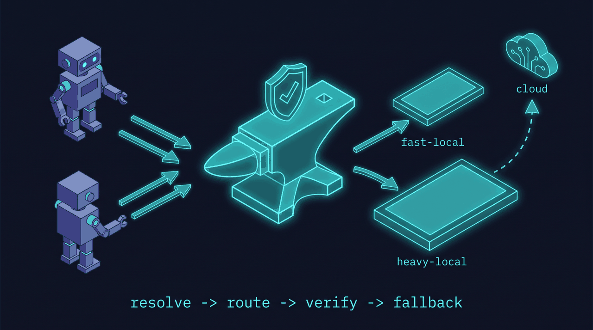
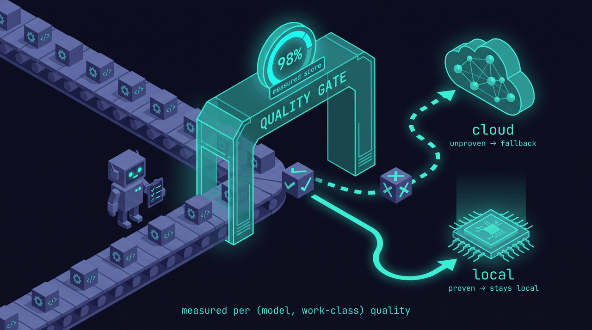

anvil-serving as a harness product: the quality-gated router¶
Status: shipped (v0.4.0) — design reference, rev 2026-06-30. Sets the product direction for anvil-serving as a harness-facing tool (Claude Code, Codex, Cline, Aider, Continue, any OpenAI/Anthropic client) rather than an anvil-coupled serving tier. Grounded in (full findings in the companion notes repo
fakoli/anvil-serving-notes): the integration-point audit (the integration point is the runtime, not anvil), the planning-capability eval (local quality is work-class-dependent and measurable), and the harness-intent-routing research (what harnesses can actually carry on the wire — verified).
1. Thesis¶
anvil-serving is the workload-aware, correctness-gated local-model router for coding harnesses. Local where it's been proven, cloud where it hasn't — verified, with automatic fallback.
A coding harness points at one anvil-serving endpoint. Per request, anvil-serving decides which tier (fast-local / heavy-local / cloud) should serve it, based on a measured per-(model, work-class) quality profile; cheaply verifies the result; and falls back to the next tier (ultimately cloud) when the local answer fails. The harness sees one reliable endpoint and never eats a silent local-quality failure mid-run.
2. Why this is the wedge (and not "another proxy")¶
Transport is commodity (LiteLLM, claude-code-router, Ollama, OpenRouter). None of them know whether local can actually do this work — they route by static rules (model name, cost, regex). The planning eval is the proof that the missing primitive exists and is buildable:
- local output is ~100% structurally valid but ~2/5 on dependency reasoning — a dumb proxy sends that to local and silently corrupts a long agent run.
- the gap is per-work-class and measurable, so routing can be evidence-based.
The defensible asset is therefore not the proxy — it's the quality profile (per model ×
work-class, measured on the user's own workload) plus the verify-and-fallback loop.
Competitors can copy transport in a weekend; they can't copy "we measured that gpt-oss-20b is
safe for bounded edits but unsafe for dependency planning on your repos."
3. Intent addressing: callers name a use-case, not a model¶
The API surface is the product. Callers declare an intent (a capability/use-case preset like
planning, quick-edit, review, chat, long-context) — not a model name. The router owns
intent → (model, tier, params). This is what turns the quality profile from a hidden table into the
product: the caller says "give me a planning-grade answer, local if it qualifies," and our measured
knowledge of which model clears that bar is the value. Models become a fungible backend pool;
clients never change when models churn (re-point an intent centrally instead).
Decision — the descriptor is a closed enum of named presets, carried in the model field
("model-name-as-intent"). Verified rationale (harness-intent-routing findings, fakoli/anvil-serving-notes):
unmodified harnesses expose exactly one operator-controllable routing channel — the model string,
which is required in both wire schemas, forwarded verbatim, and free-form (only the genuine
upstream validates model names; a router behind the base_url may reinterpret them). Shipping
gateways already do this (OpenRouter slugs, LiteLLM aliases, Cloudflare dynamic/<route>). A single
flat string can only carry a preset name, so the wire vocabulary must be a closed preset enum;
richer multi-axis intent does not belong in the string.
- Presets are the wire vocabulary; dimensions are the internal expansion. Each preset resolves internally to hard constraints (context length, privacy=local-only, tool/structured-output support, cost ceiling) that filter the candidate pool, plus a quality intent that ranks the survivors via the profile. Filter, then rank.
- Keep a
model:override escape hatch — some callers must pin a model (repro, debugging). Intent is the default/recommended surface; pinning stays available.
4. Architecture¶

┌──────────────────── anvil-serving router ───────────────────┐
harness → │ front door → resolve intent → route → [verify] → return │ → harness
(CC/Codex)│ (Anthropic (preset in (filter by │ on fail ↘ │
│ +OpenAI model field, else constraints, │ fall back to │
│ dialects) infer work-class) rank by │ next tier / cloud │
│ quality profile) │
└───────────────────────────────┬──────────────┴────────────────────┘
▼
fast-local :30001 heavy-local :30000 cloud (Anthropic/OpenAI)
(multiplexer-managed) (user's existing key/sub)
Control plane (slow, offline): profile → shadow-eval → routing table (the quality
profile). Refreshed on demand and continuously calibrated from sampled production traffic.
Data plane (fast, per-request): resolve intent → route → optional inline verify → fallback. Must add negligible latency and must stream.
Routing topology¶
The diagram below shows the full component topology: what modules exist, how they chain, and — most importantly — where the default path ends (local tiers) vs. the opt-in and escape branches.
flowchart TD
H["Harness / Gateway<br/>(Claude Code · Codex · Aider · Cline · OpenClaw)"]
subgraph ROUTER["anvil-serving router"]
FD["front_door<br/>POST /v1/messages<br/>POST /v1/chat/completions<br/>POST /v1/route"]
INT["intent.resolve<br/>Tier-1: preset in model field<br/>Tier-0: classify payload"]
POL{"policy.route<br/>quality profile gate"}
VF["verify + fallback<br/>commit_window · retry cap"]
FD --> INT --> POL
POL -->|"allow / allow-with-verify"| VF
end
subgraph LOCALBOX["Default path — free GPU, zero metered cost"]
FL["fast-local :30001<br/>(multiplexer-managed)"]
HL["heavy-local :30000<br/>(multiplexer-managed)"]
end
CLOUD["cloud tier — opt-in only<br/>Anthropic / OpenAI API · metered per-token<br/>(metered_cloud config + API key required)"]
SOS["503 exhaustion<br/>gateway transport failover<br/>native subscription provider<br/>flat-rate, zero metered by anvil"]
RET([200 to harness])
H --> FD
POL -->|"deny, no local candidate"| SOS
VF --> LOCALBOX
LOCALBOX --> VF
VF -->|"verify passes"| RET
VF -->|"all exhausted, keyless default"| SOS
POL -.->|"opt-in keyed, metered_cloud only"| CLOUD
CLOUD --> RET
classDef gateNode fill:#0b3b40,stroke:#23b6c4,color:#7fe9f0;
classDef cloudNode fill:#16365e,stroke:#58a6ff,color:#cfe6ff;
classDef localNode fill:#0b2b0b,stroke:#23c430,color:#7ff09a;
classDef escNode fill:#3b1800,stroke:#c47823,color:#f0c887;
class POL,VF gateNode;
class CLOUD cloudNode;
class FL,HL localNode;
class SOS escNode;Key reads:
- Solid green (local tiers): the default path — a deny-free, quality-gated request never leaves the GPU box.
- Dashed blue arrow → cloud: only drawn when [router].metered_cloud is set and an API key is present; absent from configs/example.toml.
- Amber (503 / escape): the keyless-default path — anvil exhausts local, returns 503 with no local tokens committed; the upstream gateway (e.g. OpenClaw) treats this as a transport failure and re-runs on its native flat-rate subscription.
POST /v1/route decision flow¶
POST /v1/route exposes the routing brain as a decision-only endpoint — the same intent.resolve
+ policy.route pipeline as the serve path, but it returns a JSON decision and never calls
backend.generate. The OpenClaw plugin uses it in authoritative mode; any other client can query it
to preview tier selection without incurring inference cost.
flowchart TD
REQ["POST /v1/route<br/>completions-shaped body<br/>+ optional signals.work_class"] --> PARSE["parse body<br/>extract signals override"]
PARSE -->|"invalid body"| E400["400 — malformed request"]
PARSE --> INT["intent.resolve<br/>(same brain as the serve path)"]
INT --> ROUTE{"policy.route<br/>quality profile + metered_cloud gate"}
ROUTE -->|"tier found"| DEC["200 routing decision<br/>tier · model · provider · work_class<br/>reason · confidence · session_id<br/>backend.generate never called"]
ROUTE -->|"all candidates exhausted"| E503["503 — no suitable tier"]
classDef gateNode fill:#0b3b40,stroke:#23b6c4,color:#7fe9f0;
classDef okNode fill:#0b2b0b,stroke:#23c430,color:#7ff09a;
classDef errNode fill:#3b0b0b,stroke:#c42323,color:#f08080;
class INT,ROUTE gateNode;
class DEC okNode;
class E400,E503 errNode;Status codes: 200 (decision made, even when tier: cloud), 400 (malformed / missing model
field), 503 (no tier survives the quality + metered-cloud gate).
5. The quality profile (the moat)¶

A table keyed (model, work-class) → {quality_score, sample_n, last_measured, decision} where
decision ∈ {allow, allow-with-verify, deny}. Populated by:
- Bootstrap from the shadow-eval harness already built (eval data in
fakoli/anvil-serving-notes): replay representative requests per work-class to each local tier, grade against cloud (deterministic checks + blind/LLM judge), emit the table. Generalize that harness from "planning" to arbitrary work-classes. - Calibrate continuously: async-sample a small % of production responses, grade with cloud off the hot path, update scores. The table tracks model/quant/serve changes over time.
- Right-size from the user's real usage via existing
profile(which work-classes dominate their traffic — focus measurement where it matters).
This is what makes routing evidence-based instead of vibes.
6. Routing signal: the graceful-degradation tier ladder¶
Intent resolution degrades gracefully to the highest tier the originating harness can reach. The classifier is not optional — it is the universal floor, because most requests arrive on a single session model string with no declared intent (verified: harnesses pin the model across a small fixed set of slots per session and do not vary it per work-class within the main loop).
| Tier | Mechanism | What it unlocks | Available on |
|---|---|---|---|
| 0 — Infer | classify work-class from raw payload (token count, thinking flag, tool types, image content, system-prompt fingerprint) |
per-request intent with no caller cooperation — the default operating mode | every harness that reaches the endpoint |
1 — Named presets in model field |
caller/config sets a preset token; router maps preset → tier | caller-declared coarse (session-slot) intent; removes guesswork for those slots | Claude Code, Codex, Aider, Cline, Continue — not Cursor/Amp/Devin |
| 2 — extra_body / header dimensions | optional structured hints (budget, latency, verifier policy) | multi-axis intent beyond the flat string — config-level, not per-request | Codex, Continue; Aider (config). Not Claude Code/Cursor |
| 3 — Native intent field | a first-class per-request intent field | true per-request multi-axis intent | none today — needs a standard/harness change |
Taxonomy v0 (start coarse; the eval shows class matters more than precision):
chat/Q&A, bounded-edit, multi-file-refactor, planning/decomposition, review/critique,
long-context-retrieval. Bias ambiguous classifications toward the safer/cloud tier and log for
calibration. (claude-code-router is the production existence proof for Tier 0+1.)
Client-side classification (the hook-plugin pattern). A harness with an in-process
model-resolution hook can declare per-request intent itself, escaping the session-coarse limit
without any wire-schema change. OpenClaw is the live example: its before_model_resolve hook
runs per turn, so a small client plugin classifies the turn and emits an anvil preset id as the
modelOverride. The router then receives a declared per-request intent (verbatim in the model
field) and needs no new field — it just needs a stable preset vocabulary. This is the preferred
shape where available: push Tier-0 classification to the client (cheaper, better-informed; it sees
full turn context) and keep the router a clean executor. Closed harnesses (Claude Code, Codex) lack
the hook, so the router's own Tier-0 classifier remains their floor.
7. Verify-and-fallback: two modes (contract C4)¶
Contract C4 has two operating modes depending on whether a metered cloud tier is configured.
Full rationale: ADR-0001 ·
docs/PLAN-advise-and-defer.md.
Mode 1 — Keyless (default)¶
The default config (configs/example.toml) holds no cloud API key. All candidate tiers are
local; a cloud tier is never in the routing pool.
sequenceDiagram
autonumber
participant H as Harness / Gateway
participant R as anvil-serving router
participant L as local tier
H->>R: request (intent preset in model field)
R->>R: resolve intent, route via quality profile
R->>L: attempt local (buffered in commit window)
L-->>R: candidate output
R->>R: cheap structural verify
alt verify passes
R-->>H: local response (200)
else verify fails or all candidates exhausted
R-->>H: exhaustion_status (503 by default) — no partial local tokens
Note over H: gateway transport failover re-routes<br/>on native subscription provider
endWhen an allow-with-verify response fails the structural verify gate, route_with_fallback
exhausts all candidates (returning FallbackResult(exhausted=True)); the serving layer
(RoutingBackend.generate) then raises NoAvailableTierError. The front door maps this to
exhaustion_status (default 503, configurable via [router].exhaustion_status to match the
gateway's transport-failover trigger). The commit window guarantees no partial local tokens
reach the harness before the error response — the harness sees an unambiguous availability signal,
not a corrupt partial response.
For a gateway like OpenClaw that fronts the harness, the 503 triggers native transport failover ("overloaded" category), which re-runs the request on the gateway's native subscription provider — the flat-rate subscription the operator already holds. anvil holds no cloud key; the metered surface is absent from the default path. $0 metered API billing.
Live-validation caveat (T005 — pending): that anvil's exhaustion-503 maps to OpenClaw 2026.6.6's "overloaded" failover category is confirmed by reading
run.tsbut has not yet been validated against a live OpenClaw install. If it does not trigger failover, set[router].exhaustion_statusto the status code that does. See Phase 1 indocs/PLAN-advise-and-defer.md.
Mode 2 — Opt-in keyed (metered cloud tier)¶
An operator who explicitly configures a cloud tier and maps specific work-classes to it via
[router].metered_cloud gets router-internal escalation: a verify failure escalates to the
cloud tier and returns a 200 with the cloud response, without the harness seeing an error.
sequenceDiagram
autonumber
participant H as Harness
participant R as anvil-serving router
participant L as local tier
participant C as cloud tier (metered)
H->>R: request (intent preset in model field)
R->>R: resolve intent; metered_cloud gate → cloud is a candidate
R->>L: attempt local (buffered in commit window)
L-->>R: candidate output
R->>R: cheap structural verify
alt verify passes
R-->>H: local response (200)
else verify fails or backend error
R->>C: fall back up the tier chain
C-->>R: cloud response
R-->>H: cloud response (200) — no partial local tokens leaked
endThis mode requires:
1. A [[router.tiers]] entry with privacy = "cloud" and auth_env naming the API key env var.
2. [router].metered_cloud = ["work-class", ...] — the explicit per-intent opt-in list.
Empty/absent = cloud is never a routing candidate, even if a cloud tier is declared.
See configs/example-with-cloud.toml for the full opt-in config. Cost fields
(cost_input_per_mtok, cost_output_per_mtok) on the tier drive the decision log + metrics.
Billing note: routing through a metered cloud tier incurs per-token API billing on every cloud-served request. This is not the flat-rate subscription — it is the raw
api.anthropic.com/api.openai.commetered surface. Prefer Mode 1 (keyless + gateway transport failover) wherever the gateway supports it; use Mode 2 only for single-endpoint harnesses that cannot route cloud themselves.
The allow-path tradeoff: latency vs. error quality¶
The quality profile assigns each (model, work-class) pair one of three decisions:
allow, allow-with-verify, or deny. This decision carries an inherent latency
vs. error-quality tradeoff for any request that reaches a local tier:
-
allow(fast-path): tokens are streamed directly to the harness as they arrive — no commit window, minimum latency. If the backend fails mid-stream (dropped connection, OOM-kill, truncated output), partial tokens have already been written. There is no clean fallback: the harness sees a truncated stream rather than an unambiguous HTTP error. -
allow-with-verify: the response is buffered in the commit window before any token is released to the harness. Verification runs on the buffered output. A failure — whether a backend error or a failed verifier — triggers a clean fallback with zero partial tokens delivered (the C3 guarantee). The harness sees either a complete, verified response or an unambiguous exhaustion status (503 by default).
This asymmetry is inherent to the allow fast-path's latency benefit. It is a deliberate
per-(model, work-class) decision: use allow only where a tier is proven reliable enough
that mid-stream failure is operationally acceptable; use allow-with-verify where clean
fallback matters — structured output that downstream tooling must parse, multi-file edits,
or any class where a partial result is worse than no result. The quality profile's
calibration loop (§5) provides the evidence base for that decision.
Verification tiers (both modes)¶
Inline LLM-grading every response would defeat the purpose (cost + latency). So most "quality control" is routing done ahead of time (§3–6); verification is a cheap safety net, tiered:
- Prevent (primary): never send a
denywork-class to local. Free; catches the biggest risks (e.g. dependency planning → cloud/gateway, always). - Cheap structural verify (inline): near-zero-cost checks that caught real failures in our eval — empty/truncated content (thinking-budget starvation), tool-call JSON that doesn't validate, code that doesn't parse, a diff that doesn't apply, malformed format. Fail → fallback.
- Confidence signals (inline, where available): logprob/entropy thresholds, refusal/uncertainty markers.
- Async LLM-judge (off hot path): sampled cloud grading that feeds the profile (§5.2), not a blocking gate.
Fallback policy: on verify-fail / error / timeout / low-confidence → retry next candidate in
the ordered tier list. Guardrails: cap retries, prevent thrash, make fallback idempotent for the
harness (especially mid-stream — see §13), and log every fallback (a fallback is a profile
signal: that class may need to be downgraded to deny).
8. Harness integration + the per-harness reality¶
One front door speaking two dialects so it's zero-config for the major harnesses:
- Anthropic Messages API → Claude Code via ANTHROPIC_BASE_URL / ANTHROPIC_AUTH_TOKEN;
honor CLAUDE_CODE_SUBAGENT_MODEL / ANTHROPIC_DEFAULT_HAIKU_MODEL slot semantics.
- OpenAI Chat Completions → Codex / Cline / Aider / Continue / generic clients.
- Translate dialects + absorb backend quirks (thinking-default models need generous max_tokens
and can't take chat_template_kwargs over some paths; the sm_120 engine/quant matrix). Absorbing
this friction is itself a feature.
Verified support grid (full detail + citations in the finding):
| Harness | base_url? | arbitrary model string? | per-request hook / extra fields | intent slots/session | tier |
|---|---|---|---|---|---|
| OpenClaw | ✅ per-provider baseUrl |
✅ self-allowlisted, verbatim | ✅ before_model_resolve hook → modelOverride per turn (no header/body channel) |
per-agent + per-turn override | 1→2 (routing) |
| Hermes Agent | ✅ provider: custom+base_url |
✅ verbatim | ❌ over wire (hooks inject user-msg text only) | main + ~11 aux + fallback/MoA/subagents | 1 (rich) |
| Claude Code | ✅ env | ✅ (ANTHROPIC_CUSTOM_MODEL_OPTION skips validation; sent as-is) |
❌ (only fixed opaque metadata.user_id) |
~3–4 (main/haiku/subagent/advisor) | 1 |
| OpenAI Codex CLI | ✅ config.toml | ✅ free-form | ⚠️ config-level http_headers/query_params |
1 + subagent | 1 (+2) |
| Aider | ✅ env | ✅ openai/<token> |
⚠️ config-level | ~3 (main/editor/weak) | 1 |
| Cline | ✅ field | ✅ free-text | ❓ undocumented | ~1–2 | 1 |
| Continue.dev | ✅ apiBase |
✅ free string | ✅ requestOptions.headers (config) |
role-based | 1 (+2) |
| Cursor | ⚠️ backend-mediated + Verify gate | ⚠️ fragile | ❌ | server-side auto | 0 / unusable |
| Amp / Devin / closed SaaS | ❌ backend-locked | — | — | — | none |
Scope qualification (important): Cursor, Amp, and Devin are out of scope for self-hosted routing — Cursor mediates through its own backend (Verify-gated), and Amp/Devin can't be repointed at a custom endpoint at all. The README's "any OpenAI/Anthropic client" claim must be qualified to "any client that allows a custom base URL and a free-form model string."
OpenClaw is the one in-scope client that crosses into per-request routing (open-source TS Plugin
SDK; its before_model_resolve hook runs per turn and can set modelOverride/providerOverride).
Hermes Agent (open-source MIT) is a clean, rich Tier-1 consumer — notably more model slots than
Claude Code — but its hooks can't alter the outgoing request, so it stays Tier-1 short of a fork
(OpenClaw/Hermes customization findings in fakoli/anvil-serving-notes).
Beachhead decision — OpenClaw-first (focus, not couple). anvil-serving concentrates integration
depth on OpenClaw as the first-class client, because it's the one harness that unlocks per-request
intent (the before_model_resolve hook → the client-side classification pattern in §6), it's
open-source (we can ship a reference plugin and patch upstream), and one OpenClaw integration reaches
the many chat surfaces it already bridges. This is focus, not coupling: the core router stays
protocol-standard (Anthropic + OpenAI dialects), so every other harness still gets Tier 0/1 for free,
and the OpenClaw piece is a thin, swappable adapter/plugin — if OpenClaw stalls, the core survives
and another hook-capable harness takes the beachhead. (Same lesson as not coupling to Anvil:
integrate at a standard seam, focus effort at one client.) This is anvil-serving's choice and does
not affect Anvil-the-ledger's harness-agnostic mandate — different products, different mandates.
Risk to manage: OpenClaw is young and the extension surface is churning (medium risk) — verify the
plugin/provider API hands-on before over-investing. Buildable spec + the validate-first gaps:
OPENCLAW-INTEGRATION-SPEC.md.
9. Preset vocabulary, discovery, and transparent responses¶
- Vocabulary = a closed enum sized to harness slots. Don't over-design. A handful of presets mapping onto taxonomy v0 (§6) and the slots harnesses actually emit (main / background / subagent). Flat — no multi-axis encoding in the string.
- Discovery via
/v1/models. Serve a/v1/modelslisting the preset tokens with human-readable names/descriptions, so presets are first-class in the harness UI. Claude Code populates its/modelpicker from a gateway's/v1/modelswhenCLAUDE_CODE_ENABLE_GATEWAY_MODEL_DISCOVERY=1;ANTHROPIC_CUSTOM_MODEL_OPTIONis the single-entry alternative. - Transparent response. The abstraction is on the request; the response stays honest — set
the response
modelto the real model/tier that served (OpenRouter does this), and log the(declared-or-inferred intent → tier → verify result → fallback?)decision. Hiding what ran kills debuggability and the local-first trust story. - Session stickiness + mapping versioning. Don't swap models mid-conversation unless quality/health forces it (turn-level switch boundaries). The same intent may route differently as the profile recalibrates — surface a mapping version and allow pinning for reproducibility.
10. Extensibility / plugin seams¶
The router is a pipeline, so "plugin architecture" mostly means naming its stages as typed seams
(typing.Protocol + a small in-process registry), not a framework. Split:
- Internal seams — now: Protocols + registry so maintainers drop in implementations without
touching the core. Nearly free; good structure for M0–M2. The multiplexer already proves the
pattern (per-engine SGLang+vLLM dispatch behind one interface).
- Public third-party plugin SDK — defer to M3+: importlib.metadata entry points (stdlib — no
plugin lib, preserves "stdlib-only by design"), a versioned contract, a capability manifest, trust.
Publishing a plugin API too early freezes interfaces still in flux.
Seam (Protocol) |
swaps | plane | early? |
|---|---|---|---|
Intent/preset |
a use-case (its constraints + quality req + candidate pool + verifiers) | control | headline extension point |
Dialect (front door) |
Anthropic / OpenAI / future protocols | data | yes (M0 needs 2) |
Classifier |
request → work-class | data | yes |
RoutingPolicy |
(intent, profile, health) → ordered tier list | data | yes |
Backend |
tier → inference engine | data | exists (multiplexer) |
Verifier |
response → pass/fail/score (cheap, chainable) | data | yes |
Grader |
async quality grading for calibration | control | yes |
ProfileStore |
where the quality table lives | control | maybe |
Observer/hook |
logging, metrics, fallback events | cross | yes |
Contract rules from day one: (1) failure isolation = fallback — a plugin that throws/times out is treated as another fallback trigger (composes with the wedge; wrap + circuit-break); (2) latency budget — data-plane plugins declare & respect a budget, heavy work goes async; (3) versioned contracts — registry refuses incompatible plugins (why the public SDK waits); (4) trust — plugins run arbitrary code in the request path (fine for local-first/own; signing/allowlist for third-party). Don't build dynamic loading or a manifest spec until a seam has a real second impl.
11. Reuse map — most of this exists¶
| Capability | Module | Status |
|---|---|---|
| Right-size from real usage | profile |
exists |
| Per-model serving facts / sane defaults | models sync, analyze |
exists / designed |
| Bring up + on-demand model swap on one GPU | multiplexer (multi-engine, single-resident) |
exists |
| Correctness gate | preflight |
exists |
| Throughput / capacity measurement | benchmark |
exists |
| Per-work-class quality measurement | shadow-eval harness | built (generalize) |
| Front door + intent-resolve + route + verify + fallback | new router module |
the build |
The genuinely-new surface is the router data plane + the quality-profile control plane. The serving substrate is already here.
12. MVP milestones¶
- M0 — front door: Anthropic + OpenAI endpoints, pass-through to one backend, streaming. Makes
anvil-serving drop-in for Claude Code today. Define the
DialectandBackendProtocol seams. - M1 — Tier 0 + Tier 1 together: the classifier (Tier 0, the floor) and preset parsing from
the
modelfield (Tier 1) — not Tier 1 alone, because most traffic arrives without a declared intent. Tier rules over the multiplexer (bounded→fast, long-ctx→heavy, planning/review→cloud); hand-authored table. Serve/v1/modelspreset discovery. - M2 — the wedge: cheap structural verify + verify-gated fallback (streaming commit window; cloud escalation is the opt-in keyed mode — the keyless default returns an exhaustion-503 for gateway handoff) and transparent responses (echo the served model/tier). First release delivering the unique promise.
- M3 — measured table + plugin SDK: generalize the shadow-eval to populate the quality profile per work-class; replace the hand-authored table; add async calibration; expose public plugin entry points. The moat turning on.
Ship M0–M2 to be useful and unique; M3 makes it defensible.
13. Risks / open questions¶
- Per-request granularity is capped by the harness (verified constraint): a harness configured with one model can't declare different intents per call within the main loop — the classifier is load-bearing, not optional. Design around it; don't assume callers can tag every request.
- Classification accuracy — wrong class → wrong route. Mitigation: coarse taxonomy, bias ambiguous→safer tier, log+calibrate. (Eval shows class matters more than precision.)
- Streaming + mid-stream fallback — the hardest engineering problem: both APIs stream via SSE (OpenAI data-only chunks; Anthropic named events), and verify-before-deliver fights low-latency streaming. Likely need a short non-streamed "commit window" for fail-prone classes, or speculative buffering. Spike this early.
- Verify cost/latency — must stay structural/cheap inline; anything heavier goes async.
- Fallback thrash / cost blowups — caps, circuit-breakers, per-session budget awareness.
- Stateful agents — switching tiers mid-conversation must preserve context; turn-level boundaries.
- Profile staleness — model/quant/serve swaps invalidate rows; key the table on a serve fingerprint and re-measure on change.
- Privacy — async cloud calibration sends sampled local traffic to a cloud grader; opt-in and redactable (a selling point for the local-first crowd, so get it right).
14. Success metrics¶
- % of agent traffic safely served local (the capacity/cost win) at a bounded rework rate (the quality guarantee) — the two numbers that define the product.
- Silent-failure rate ≈ 0 (verify+fallback catches local misses before the harness does).
- Cloud tokens saved vs all-cloud, holding accept-rate constant.
- Drop-in time (minutes from
pip installto a harness running through it).
Appendix — config recipes (how to carry intent today)¶
Claude Code (intent preset per slot):
export ANTHROPIC_BASE_URL="https://anvil.local"
export ANTHROPIC_AUTH_TOKEN="…" # → Authorization header
export ANTHROPIC_MODEL="planning" # main-loop intent, sent verbatim
export ANTHROPIC_DEFAULT_HAIKU_MODEL="quick-edit" # background/utility intent
export CLAUDE_CODE_SUBAGENT_MODEL="review" # subagent-class intent
export ANTHROPIC_CUSTOM_MODEL_OPTION="long-context" # optional: surface a preset in /model
export CLAUDE_CODE_ENABLE_GATEWAY_MODEL_DISCOVERY=1 # optional: enumerate router presets
# enterprise fleets: add the preset tokens to availableModels if that allowlist is set
Aider (preset rides in the model string; openai/ prefix forces compat routing):
export OPENAI_API_BASE="https://anvil.local/v1"
export OPENAI_API_KEY="…"
aider --model openai/planning --editor-model openai/quick-edit --weak-model openai/chat
# the "model … not familiar with" warning is cosmetic; routing works
Cline / Continue.dev — select "OpenAI Compatible"; Base URL https://anvil.local/v1, Model (ID)
= a preset token. Continue can attach Tier-2 hints via requestOptions.headers.
OpenAI Codex CLI (~/.codex/config.toml) — Tier 1 + optional Tier 2 side-channel:
model = "planning"
model_provider = "anvil"
[model_providers.anvil]
base_url = "https://anvil.local/v1"
wire_api = "chat" # third-party gateways commonly use "chat" (version-dependent)
http_headers = { "x-anvil-intent" = "planning" } # optional Tier-2 dimension
Cursor / Amp / Devin — not supported for self-hosted routing (backend-mediated / backend-locked).